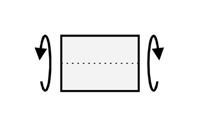
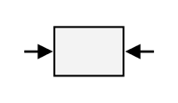

下列何者是『彎矩』行為？


利用爆破法開挖岩石隧道是誰發明的﹖
愚公
諾貝爾
湯姆士
蒙恬
下列何者不為水土保持及植生綠化工作的功用？
保育自然生態環境
減輕下游水患
涵養水源
加速土壤流失
會讓一個人展開雙翅翱翔天際，蜥蜴變恐龍，又是什麼呢？
魔法
想像力
不知道
你問我，我問誰
下列哪種道路的路權最高？
高速公路
快速道路
聯絡公路
鄉間巷道
[
回到首頁
|
C博士簡介
|
C博士開講
|
虛擬城市探險
|
線上大考驗
|
線上輔助說明
]
© 1997
316.2 Studio